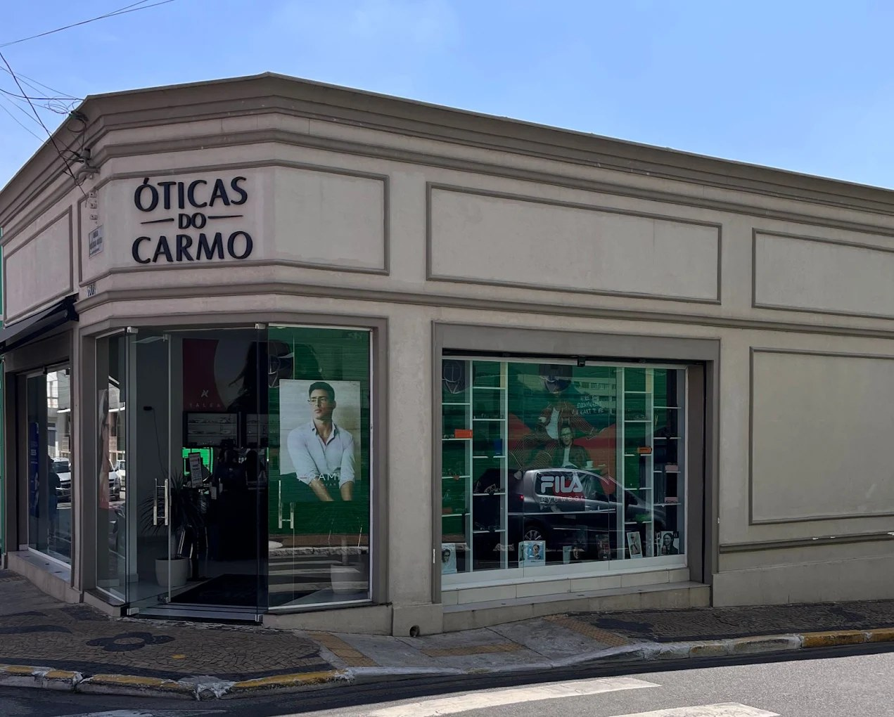

Tudo começou quando Luís Fernando Crespo deixou a Guarda Mirim de Santa Bárbara d'Oeste para iniciar sua trajetória na Ótica Bignoto. Lá, aprendeu a surfaçagem (fabricação de lentes oftálmicas) e a montagem, o encaixe das lentes no aro escolhido pelo cliente.
Em 1990, surgiu a oportunidade de ir para Indaiatuba, onde seguiu sua carreira na área óptica com dedicação e experiência.
Acompanhando tudo desde criança, aprendi com ele. Em 2013, decidimos dar um novo passo e abrir nosso próprio negócio em Itu.
Assim nasceu a Óticas do Carmo, na Travessa do Carmo, ao lado da igreja e em frente à praça, com um nome pensado para se conectar com a cidade e sua história.

Tire dúvidas e consulte disponibilidade direto com a nossa equipe pelo WhatsApp.
WhatsApp: (11) 98720-6811